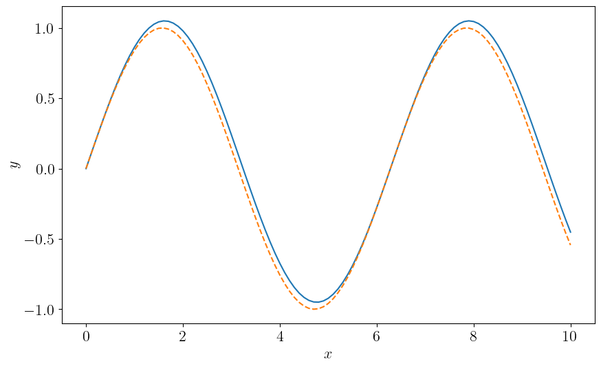
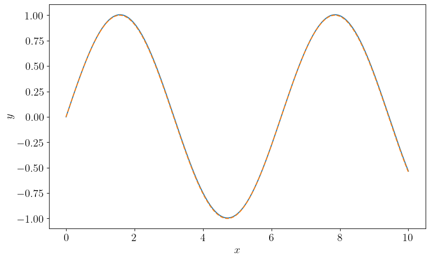
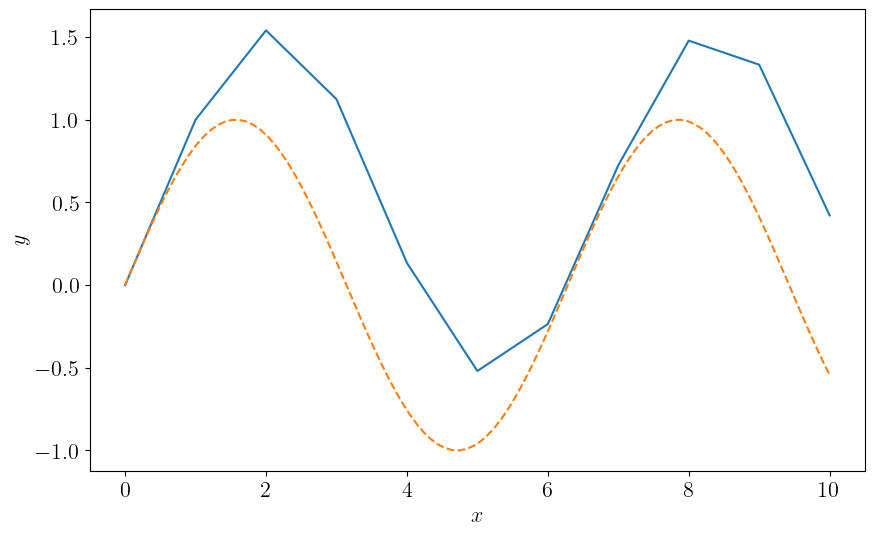

Ordinary Differential Equations
Ordinary Differential Equations
Ordinary Differential Equations (ODEs) are equations for functions with only one variable (but there may be multiple unknown functions):
$$ \frac{dy_i}{dx} = f(x, y_i) $$The goal is to solve for the unknown funtions $y_i(x)$.
Ordinary Differential Equations
Example:
$$ \frac{dy}{dx} = -y $$has the solution
$$ y(x) = C e^{-x} $$Solutions to first order ODEs always involve an unknown constant. It needs to be determined using some external conditions.
Initial Value Problems
Initial value problems (IVPs) are ODEs with a given value of the function at some point $x_0$:
$$ \frac{dy}{dx} = f(x, y), \quad y(x_0) = y_0 $$In physics, this most often arises from time evolution: you know the state of a system at time $t = t_0$, and you want to predict its behavior at future times.
Boundary Value Problems
Another common type of ODEs are boundary value problems (BVPs):
$$ \frac{dy}{dx} = f(x, y), \quad y(a) = y_0, \quad y(b) = y_1 $$We seek solution $y(x)$ in the interval $x\in [a, b]$. We will deal with IVPs first, then BVPs later.
Euler Integration
The simplest way to solve an IVP is to use Euler integration:
$$ y_{n + 1} = y_n + h f(x_n, y_n) $$where $h$ is the step size, and $y_n$ is the value of $y(x)$ at $x_0 + nh$. What is the order of accuracy of this method?
Since this is effectively truncating the Taylor series right after the first derivative, this method is accurate to first order in $h$.
$$ y(x + h) = y(x) + h y'(x) + O(h^2) $$Euler Integration

Euler Integration
The idea of Euler integration is very instructive, but the method itself is not very useful in practice:
- It is not very accurate, being only first order in $h$.
- Since it's not very accurate, it requires very small $h$ and many more steps to achieve the same accuracy as other methods, which is not very efficient.
- It is not very stable (to be defined next week).
Midpoint Method
Consider the following extension of the Euler method:
$$ \begin{align} k_1 &= f(x_n, y_n) \\ k_2 &= f\left(x_n + \frac{1}{2} h, y_n + \frac{1}{2} h k_1\right) \\ y_{n + 1} &= y_n + h k_2 \end{align} $$$k_1$ is the slope at the beginning of the interval, and $k_2$ is the slope at the midpoint of the interval (estimated using $k_1$).
What is the order of accuracy of this method?
Midpoint Method
Expanding both $y(x + h)$ and $y(x)$ around $x + \frac{1}{2} h$ in Taylor series:
$$ \begin{align} y(x + h) &= y(x + h/2) + \frac{h}{2}y'(x + h/2) + \frac{1}{8} h^2 y''(x + h/2) + O(h^3) \\ y(x) &= y(x + h/2) - \frac{h}{2} y'(x + h/2) + \frac{1}{8} h^2 y''(x + h/2) + O(h^3) \end{align} $$Taking the difference between these two equations:
$$ y(x + h) = y(x) + h y'(x + h/2) + O(h^3) $$The midpoint method is accurate to second order in $h$.
Runge-Kutta Methods
Runge-Kutta methods are a family of methods that are more accurate than Euler integration. The midpoint method is also known as the 2nd order Runge-Kutta method, or RK2.
The most common one is the 4th order Runge-Kutta method, aka RK4:
$$ \begin{align} k1 &= f(x_n, y_n) \\ k2 &= f\left(x_n + \frac{1}{2} h, y_n + \frac{1}{2} h k_1\right) \\ k3 &= f\left(x_n + \frac{1}{2} h, y_n + \frac{1}{2} h k_2\right) \\ k4 &= f(x_n + h, y_n + h k_3) \\ y_{n + 1} &= y_n + h\left(\frac{1}{6} k_1 + \frac{1}{3}k_2 + \frac{1}{3}k_3 + \frac{1}{6}k_4\right) \end{align} $$4th Order Runge Kutta

4th Order Runge Kutta
The accuracy of RK4 is, as advertised, 4th order in $h$.
For many physicists, RK4 is THE method of choice for solving numerical ODEs. It is accurate enough for many applications. In a lot of contexts, Runge-Kutta simply means RK4.
What are some of its drawbacks?
4th Order Runge Kutta
Drawbacks of RK4:
- It is not very stable. It is not very good at solving stiff equations (to be defined next week).
- It is not very efficient. Fixed step size means you need to choose $h$ according to the most challenging part of the solution.
- 4th order accuracy sometimes is not enough!
Implementation
Let's implement Euler's method in C++.
class euler_method {
public:
template <typename F, typename StopCondition>
std::vector<double> integrate(const F& f,
const StopCondition& stop,
double h, double x0,
const std::vector<double>& y0) {
double x = x0;
std::vector<double> y = y0;
while(stop(x, y) == false) {
xs.push_back(x);
result.push_back(y);
y += h * f(x, y);
x += h;
}
return y;
}
std::vector<double> xs;
std::vector<std::vector<double>> result;
};
Implementation
Using this class for a toy problem, solve $dy/dx = \cos(x)$:
auto dydx = [](double x, const std::vector<double>& y) {
return std::vector{std::cos(x)};
};
auto stop = [](double x, const std::vector<double>& y) {
return x > 10;
};
euler_method solver;
auto y = solver.integrate(dydx, stop, 0.01, 0.0, {0.0});
Implementation
Euler method $h = 0.1$
Implementation
Euler method $h = 0.01$
Output and Plotting
We can directly write to a text file using ofstream.
Include the header <fstream>.
std::ofstream output_file("output.csv");
for (int i = 0; i < solver.xs.size(); i++) {
output_file << solver.xs[i] << "," << solver.result[i][0] << std::endl;
}
Output and Plotting
Then we can plot the result using Python:
import numpy as np
import matplotlib.pyplot as plt
data = np.loadtxt("output.csv", delimiter=",")
plt.plot(data[:, 0], data[:, 1])
plt.show()
Implementation
We will be implementing RK4 in the homework using C++.
class runge_kutta_4 {
public:
runge_kutta_4(int num_equations);
template <typename F, typename StopCondition>
std::vector<double> integrate(const F& f,
const StopCondition& stop,
double x0,
const std::vector<double>& y0,
double h);
int n_eq;
std::vector<double> k1, k2, k3, k4, y_tmp;
std::vector<double> xs;
std::vector<std::vector<double>> result;
};
RK4 vs Euler
Euler with $h = 1.0$
RK4 vs Euler
RK4 with $h = 1.0$
What's Next?
We will go further than RK4 in the next lectures:
- Error estimate
- Adaptive step size control
- Higher order methods